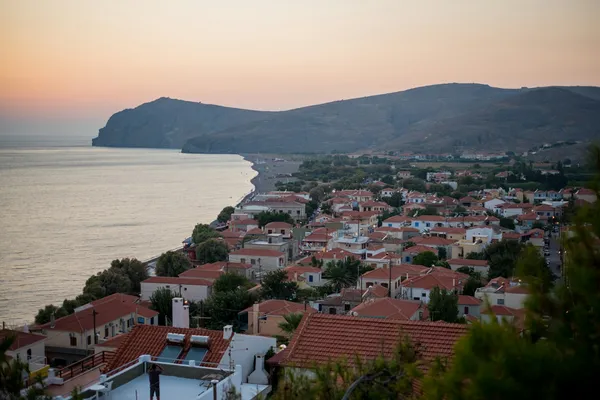

Lesbos: Ouzo

Photo: Tânia Mousinho on Unsplash
The island of Lesbos, especially the village of Plomari, is famous for some of the finest ouzo.
How it's made
Ouzo is a protected name for Greece and Cyprus. Aniseed and other spices are distilled in copper stills.
Neutral alcohol, often from agricultural sources, is redistilled in copper pot stills with aniseed, and frequently fennel, mastic, cardamom, cloves or other spices. Many Lesbos producers use local aniseed from Lisvori in the island's south.
History
Ouzo developed in Greece in the 1800s from earlier anise spirits, and Lesbos became its best-known home. The seaside village of Plomari has a long ouzo-making tradition, and several family distilleries are still based there.
Ageing and label terms
Ouzo is not aged in wood; it is rested and diluted to bottling strength. Labels may say 100% distilled, meaning no undistilled flavoured alcohol has been added.
Styles
Dry, aniseed-led ouzo is the main style, with houses differing in strength, sweetness and spice. Tsipouro, a grape-pomace spirit sometimes flavoured with anise, is also made in Greece.
Rules and protected names
Ouzo is a protected name for products made in Greece and Cyprus, and it must be at least 37.5% ABV. 'Ouzo of Plomari' and 'Ouzo of Mytilene' (Lesbos) are protected geographical indications.
How to serve and classic cocktails
Add a little cold water or ice and watch it turn milky white as the anise oils come out of solution. It is usually drunk slowly in a tall glass over a long meze rather than in cocktails.
With food
Made for meze: grilled octopus, sardines, olives, feta, taramasalata and fried seafood.
Good to know
Pour the water before the ice: adding ice first can make the anise oils crystallise on the surface.
Producers
- Ouzo of Plomari (Isidoros Arvanitis)
- Barbayannis
Bottles to try
Plomari Ouzo
Aniseed, fennel, sweet herbs and a creamy texture.
Strength: 40% · Age and cask: Unaged
Made in the village of Plomari on Lesbos since 1894 by the Isidoros Arvanitis distillery. Distilled in copper pot stills, it turns milky white when water is added.
Serve: With cold water and ice, alongside meze
Barbayanni Ouzo Aphrodite
Fragrant aniseed and fennel with a soft, rounded, slightly sweet palate.
From a family distillery founded in Plomari on Lesbos in 1860; Aphrodite is double-distilled with local aniseed in copper stills for a smoother, more aromatic ouzo.
Serve: With cold water and ice beside grilled octopus and meze
Mini Ouzo of Mytilene
Soft, sweet aniseed with herbal and fennel notes; smooth and clean.
Strength: 40%
A classic ouzo from Mytilene on Lesbos, the island most famous for ouzo. Made by distilling aniseed and other seeds in copper stills, as the protected Ouzo of Mytilene name requires.
Serve: With cold water and ice, alongside grilled octopus
More anise & others regions
Explore all spirits in the interactive guide
The Wine Reference newsletter
New wines, stories and career guides, one email a week at most.
Over 18s only. Unsubscribe any time with one click. Your email is stored securely by Kit and never shared.
Support The Wine Reference
This guide is free, with no paywall. If it helped you choose a bottle, you can buy me a glass and keep it growing.
🍷 Buy me a glass